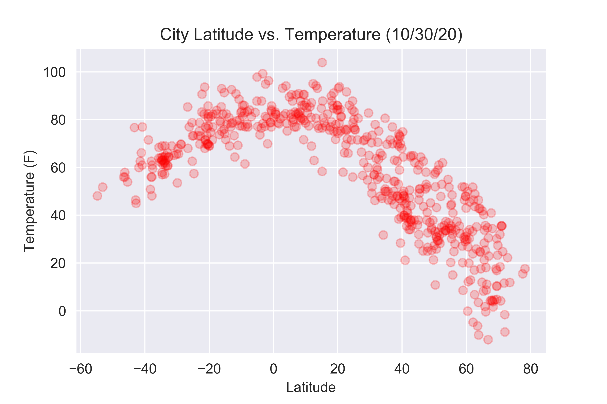

Summary: Latitude vs. X

For this project, we wanted to understand how weather changes as a function to distance from the equator. In order to perform this analysis, we collected data from OpenWeaterMap API and then assembled a dataset on over 500 cities using pandas.
After assembling the dataset, we used Matplotlib to visualize some aspects of the weather as a function of latitude. We looked at factors such as temperature, cloudiness, wind speed, and humidity. This site provides the source data, visualizations of the analysis, as well as explanations.